CODING AGENTS AS PIXEL WORLD MODELS
traex/GPT-6.1-Sol · common50_0002
点击播放 · 原生 RGB 像素
逐轮保存的候选
回放视频、检查图与代码变化。
每份候选均可单独播放。实际图片检查记录在下方工具轨迹中。
候选 01播放与检查图
点击播放 · 原生 RGB 像素

展开代码变化
--- 上一保存版本
+++ 本次保存版本
@@ -0,0 +1,211 @@
+from pathlib import Path
+import numpy as np
+from PIL import Image, ImageDraw, ImageFilter
+import cv2
+import artifact_io
+
+ROOT=Path(__file__).resolve().parent
+src=np.asarray(Image.open(ROOT/'first_frame.png').convert('RGB'))
+H,W=192,256
+SS=3
+
+def mask(poly):
+ im=Image.new('L',(W,H)); ImageDraw.Draw(im).polygon(poly,fill=255)
+ return np.array(im)
+
+def rgba(poly):
+ return np.dstack([src,mask(poly)])
+
+arm_poly=[(168,68),(171,65),(177,67),(184,73),(195,72),(194,66),(186,61),(185,54),(187,51),(192,52),(205,57),(219,62),(222,69),(232,70),(244,68),(256,73),(256,120),(243,114),(225,105),(211,99),(201,99),(184,94),(181,90),(179,80),(172,79),(169,75)]
+arm_mask=mask(arm_poly)
+# Restore the stationary wall/counter/sink revealed by the active left arm.
+bg=src.copy().astype(float)
+for y in range(H):
+ for x in range(W):
+ if not arm_mask[y,x]: continue
+ if y<66:
+ # neighboring marble at the same height, preserving its subdued texture
+ bg[y,x]=src[y,max(120,min(167,x-63))]
+ elif y<73:
+ z=(y-66)/7
+ bg[y,x]=(1-z)*src[65,max(125,min(165,x-65))]+z*src[73,163]
+ else:
+ # sink well and the thin stainless left rim
+ left=175+.29*(y-73)
+ if x<left-3:
+ bg[y,x]=src[min(172,y+35),min(171,max(158,x-15))]*.94
+ elif x<left+2:
+ bg[y,x]=np.array([107,116,110])+(x-left)*4
+ else:
+ bg[y,x]=src[min(110,y),min(229,max(211,x))] if y>108 else np.array([37,46,39])
+ # low-amplitude image texture instead of a flat patch
+ bg[y,x]+=((int(src[(y+14)%H,(x-34)%W,0])%9)-4)*.6
+bg=np.clip(bg,0,255).astype(np.uint8)
+
+# Empty basket interior: image-derived brown woven texture. Outer rim stays fixed.
+interior=mask([(66,113),(70,109),(94,107),(100,114),(102,134),(96,146),(87,153),(74,153),(64,146),(60,138),(61,125)])
+empty=bg.copy()
+yy,xx=np.indices((H,W))
+for y,x in zip(*np.where(interior>0)):
+ t=src[150+(y%8),96+(x%5)].astype(float)
+ lum=np.mean(t)
+ col=np.array([63,40,22])+.20*(t-lum)
+ weave=((x+2*y)%8<2)*8+((2*x-y)%11<2)*5
+ # the weave in the empty well is in shadow, but gets brighter toward the rim
+ edge=min(x-60,102-x,y-107,154-y)
+ col+=weave+max(0,8-edge)*1.3
+ empty[y,x]=np.clip(col,0,255)
+# Retain the original left/right basket rim and front woven wall.
+for poly in [[(58,125),(62,119),(67,117),(64,131),(65,140),(70,146),(77,151),(94,150),(91,155),(79,157),(65,152),(59,143)],[(99,112),(103,119),(107,141),(105,151),(92,162),(78,169),(76,165),(92,151),(100,141),(101,126)]]:
+ m=mask(poly)>0;empty[m]=bg[m]
+
+back_poly=[(66,116),(68,111),(73,108),(94,105),(99,107),(101,119),(100,134),(94,146),(81,150),(70,146),(64,137),(63,126)]
+front_poly=[(62,137),(68,133),(92,129),(98,130),(97,137),(92,145),(86,151),(76,153),(68,150),(63,145),(60,141)]
+back_original=rgba(back_poly)
+front_original=rgba(front_poly)
+
+# Rebuild a complete rigid slice from the visible bread face, not an external texture.
+BW,BH=38,39
+bread=np.zeros((BH,BW,4),np.uint8)
+bm=Image.new('L',(BW,BH));d=ImageDraw.Draw(bm)
+d.polygon([(3,8),(5,3),(10,1),(29,0),(34,2),(36,8),(37,27),(34,34),(29,38),(10,38),(4,34),(1,25),(1,12)],fill=255)
+a=np.array(bm)
+for y in range(BH):
+ for x in range(BW):
+ sx=int(np.clip(67+x*.86,68,98));sy=int(np.clip(111+y*.64,111,132))
+ col=src[sy,sx].astype(float)
+ boundary= x<4 or x>34 or y<3 or y>35
+ if boundary: col=col*np.array([.91,.77,.68])
+ bread[y,x,:3]=np.clip(col,0,255);bread[y,x,3]=a[y,x]
+# Source crumbs repeated only vertically in newly exposed lower bread.
+
+upper_poly=[(185,53),(188,51),(195,53),(204,57),(219,62),(219,67),(212,70),(202,70),(195,66),(188,62),(185,60)]
+lower_poly=[(168,68),(172,65),(177,67),(184,72),(184,75),(196,74),(204,77),(211,84),(212,89),(207,97),(200,99),(187,95),(182,92),(181,80),(173,79),(169,74)]
+palm_poly=[(199,65),(206,64),(222,70),(228,72),(241,80),(238,93),(225,99),(211,95),(203,90),(198,79)]
+upper=rgba(upper_poly);lower=rgba(lower_poly);palm=rgba(palm_poly)
+
+# All transforms are rigid for mechanical links. Finger slides are attached to palm rails.
+root0=np.array([223.,83.]);contact0=np.array([181.,66.]);axis=(root0-contact0);axis/=np.linalg.norm(axis);normal=np.array([-axis[1],axis[0]])
+
+def overlay(canvas, tex, M):
+ # premultiply to avoid edge colour leaking out of the alpha silhouette
+ t=tex.astype(np.float32)/255.;t[:,:,:3]*=t[:,:,3:4]
+ out=cv2.warpAffine(t, np.asarray(M,float)*np.array([[SS,SS,SS],[SS,SS,SS]]), (W*SS,H*SS), flags=cv2.INTER_LINEAR,borderMode=cv2.BORDER_CONSTANT)
+ canvas[:]=canvas*(1-out[:,:,3:4])+out[:,:,:3]
+
+def place_source(canvas, tex, root, theta, shift=(0,0)):
+ ang=np.deg2rad(theta);R=np.array([[np.cos(ang),-np.sin(ang)],[np.sin(ang),np.cos(ang)]])
+ off=np.array(root)-R@root0+R@np.array(shift)
+ overlay(canvas,tex,np.column_stack([R,off]))
+
+def bread_layer(top, sy=1., angle=0., second=False):
+ tex=bread.copy()
+ if second:
+ tex[:,:,:3]=np.clip(np.flip(tex[:,:,:3],axis=1).astype(float)*[1.04,.98,.92],0,255)
+ r=np.deg2rad(angle);R=np.array([[np.cos(r),-np.sin(r)],[np.sin(r),np.cos(r)]])
+ T=R@np.diag([.92,sy])
+ off=np.array(top)-T@np.array([BW/2,0.])
+ c=np.zeros((H*SS,W*SS,4),np.float32)
+ tt=tex.astype(float)/255.;tt[:,:,:3]*=tt[:,:,3:4]
+ M=np.column_stack([T,off])*SS
+ c=cv2.warpAffine(tt.astype(np.float32),M,(W*SS,H*SS),flags=cv2.INTER_LINEAR)
+ return c
+
+def composite_layer(canvas, layer):
+ canvas[:]=canvas*(1-layer[:,:,3:4])+layer[:,:,:3]
+
+def slot_clip(layer,slot):
+ # The near lip and front housing occlude the inserted portion of the slice.
+ Y,X=np.indices(layer.shape[:2]);x=X/SS;y=Y/SS
+ line=(82.0 if slot==0 else 94.8)-.065*(x-130)
+ layer[y>line]=0
+ return layer
+
+# Image-derived cylindrical arm: two constant-length links solved by planar IK.
+strip=src[88:108,234:256].copy()
+
+def link(canvas,A,B,width):
+ A=np.array(A);B=np.array(B);D=B-A;length=np.linalg.norm(D);u=D/length;v=np.array([-u[1],u[0]])
+ texture=cv2.resize(strip,(int(length*SS)+1,int(width*SS)+1),interpolation=cv2.INTER_LINEAR)
+ # prevent flat edges; brightness is the image's own metal cross-section
+ tex=np.dstack([texture,np.full(texture.shape[:2],255,np.uint8)])
+ m=np.column_stack([u/SS,v/SS,A-v*width/2])
+ overlay(canvas,tex,m)
+
+def joint(canvas,p,r):
+ # rasterized joint housing, source-colour shaded, with fixed circular bearings
+ image=Image.new('RGBA',(W*SS,H*SS));d=ImageDraw.Draw(image)
+ x,y=np.array(p)*SS
+ for rr,color in [(r,(20,28,25,255)),(r-1.2,(37,47,42,255)),(r-3,(25,33,30,255))]:
+ d.ellipse((x-rr*SS,y-rr*SS,x+rr*SS,y+rr*SS),fill=color)
+ c=np.asarray(image).astype(float)/255.;canvas[:]=canvas*(1-c[:,:,3:4])+c[:,:,:3]*c[:,:,3:4]
+
+def robot(canvas,root,theta,opening):
+ R=np.array(root,float);S=np.array([340.,20.]);L1=140.;L2=150.
+ v=R-S;dist=np.linalg.norm(v);u=v/dist;z=(L1*L1-L2*L2+dist*dist)/(2*dist)
+ E=S+u*z-np.array([-u[1],u[0]])*np.sqrt(max(0,L1*L1-z*z))
+ link(canvas,S,E,31);joint(canvas,E,17);link(canvas,E,R,28);joint(canvas,R,13)
+ # original palm logo and original metal fingers move as rigid photographic parts
+ place_source(canvas,palm,R,theta)
+ place_source(canvas,upper,R,theta,normal*(-opening))
+ place_source(canvas,lower,R,theta,normal*opening)
+
+# Each held slice follows its gripper with a fixed contact offset during the transfer.
+# The two pick/place cycles are separated by open-jaw withdrawal.
+poses=[
+ ((223,83),0,0), ((173,71),-43,4), ((96,76),-102,5),
+ ((81,69),-112,0), ((98,25),-112,0), ((132,4),-112,0),
+ ((132,31),-112,0), ((132,31),-112,5), ((139,5),-99,5),
+ ((99,88),-109,5), ((82,94),-112,0), ((96,53),-112,0),
+ ((132,15),-112,0), ((132,44),-112,0), ((132,44),-112,5),
+ ((165,45),-57,5), ((210,125),0,3), ((210,137),0,3),
+ ((231,111),0,5), ((231,86),0,5)]
+
+def contact(root,theta):
+ a=np.deg2rad(theta);R=np.array([[np.cos(a),-np.sin(a)],[np.sin(a),np.cos(a)]])
+ return np.array(root)+R@(contact0-root0)-np.array([0,4.])
+
+frames=[]
+for i in range(20):
+ if i==0:
+ frames.append(src.copy());continue
+ # basket faces remain source-pixel-identical until the corresponding grasp
+ base=empty.copy()
+ if i<=3:
+ m=back_original[:,:,3]>0;base[m]=src[m]
+ if i<=10:
+ m=front_original[:,:,3]>0;base[m]=src[m]
+ canvas=cv2.resize(base,(W*SS,H*SS),interpolation=cv2.INTER_CUBIC).astype(np.float32)/255.
+ root,theta,op=poses[i]
+ # shadow anchors the robot to the workspace without moving fixed objects
+ sh=Image.new('L',(W*SS,H*SS));sd=ImageDraw.Draw(sh)
+ if 2<=i<=17:
+ x,y=root;sd.ellipse(((x-16)*SS,(min(154,y+57)-5)*SS,(x+22)*SS,(min(168,y+71))*SS),fill=30)
+ sha=np.asarray(sh.filter(ImageFilter.GaussianBlur(5*SS))).astype(float)/255.
+ canvas*=1-sha[:,:,None]*.30
+ if 4<=i<=6:
+ b=bread_layer(contact(root,theta),angle=-1)
+ if i>=5:b=slot_clip(b,0)
+ composite_layer(canvas,b)
+ elif i>=7:
+ y=73 if i<17 else 78
+ composite_layer(canvas,slot_clip(bread_layer((132,y),angle=-1),0))
+ if 11<=i<=13:
+ b=bread_layer(contact(root,theta),sy=.96,angle=-1,second=True)
+ if i>=12:b=slot_clip(b,1)
+ composite_layer(canvas,b)
+ elif i>=14:
+ y=85 if i<17 else 91
+ composite_layer(canvas,slot_clip(bread_layer((132,y),angle=-1,second=True),1))
+ robot(canvas,root,theta,op)
+ out=cv2.resize(np.clip(canvas*255,0,255).astype(np.uint8),(W,H),interpolation=cv2.INTER_AREA)
+ frames.append(out)
+frames=np.array(frames,np.uint8)
+artifact_io.save(frames,ROOT)
+# Full end-to-end candidate sheet for checking both actions and attachment continuity.
+check=Image.new('RGB',(5*W,4*(H+18)),(24,27,32));dd=ImageDraw.Draw(check)
+for i,f in enumerate(frames):
+ x=(i%5)*W;y=(i//5)*(H+18);dd.text((x+3,y+2),f'{i:02d}',fill='white');check.paste(Image.fromarray(f),(x,y+18))
+check.save(ROOT/'.tmp/candidate_all.png')
+if __name__=='__main__':
+ print('Saved 20 RGB frames, pixels.npz, and index.html')
候选 02播放与检查图
点击播放 · 原生 RGB 像素
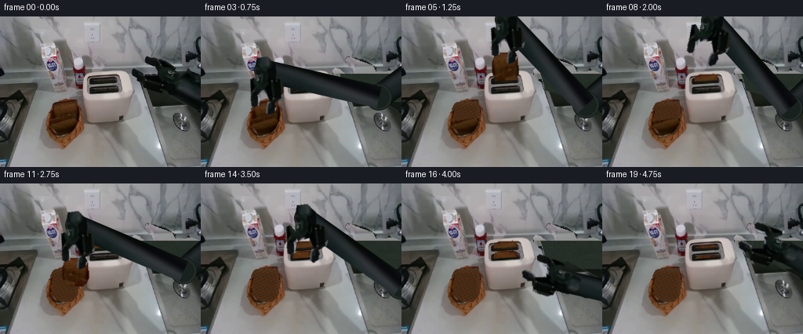
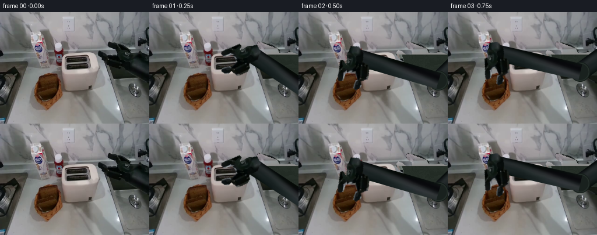
展开代码变化
--- 上一保存版本
+++ 本次保存版本
@@ -17,7 +17,7 @@
return np.dstack([src,mask(poly)])
arm_poly=[(168,68),(171,65),(177,67),(184,73),(195,72),(194,66),(186,61),(185,54),(187,51),(192,52),(205,57),(219,62),(222,69),(232,70),(244,68),(256,73),(256,120),(243,114),(225,105),(211,99),(201,99),(184,94),(181,90),(179,80),(172,79),(169,75)]
-arm_mask=mask(arm_poly)
+arm_mask=cv2.dilate(mask(arm_poly),np.ones((5,5),np.uint8),iterations=1)
# Restore the stationary wall/counter/sink revealed by the active left arm.
bg=src.copy().astype(float)
for y in range(H):
@@ -43,18 +43,26 @@
bg=np.clip(bg,0,255).astype(np.uint8)
# Empty basket interior: image-derived brown woven texture. Outer rim stays fixed.
-interior=mask([(66,113),(70,109),(94,107),(100,114),(102,134),(96,146),(87,153),(74,153),(64,146),(60,138),(61,125)])
+interior=mask([(66,116),(72,107),(95,104),(100,110),(102,134),(96,146),(87,153),(74,153),(64,146),(60,138),(61,125)])
empty=bg.copy()
yy,xx=np.indices((H,W))
for y,x in zip(*np.where(interior>0)):
- t=src[150+(y%8),96+(x%5)].astype(float)
+ # Counter exposed above the basket's rear rim, rather than a phantom bread face.
+ if y<120:
+ empty[y,x]=src[y,51+(x%6)]
+ continue
+ t=src[153+(y%5),96+(x%4)].astype(float)
lum=np.mean(t)
- col=np.array([63,40,22])+.20*(t-lum)
- weave=((x+2*y)%8<2)*8+((2*x-y)%11<2)*5
- # the weave in the empty well is in shadow, but gets brighter toward the rim
- edge=min(x-60,102-x,y-107,154-y)
- col+=weave+max(0,8-edge)*1.3
+ col=np.array([46,31,18])+.12*(t-lum)
+ weave=((x+2*y)%9<1)*4+((2*x-y)%13<1)*3
+ edge=min(x-60,102-x,y-120,154-y)
+ col+=weave+max(0,6-edge)*1.7
empty[y,x]=np.clip(col,0,255)
+# A curved back wicker lip remains fixed when bread is removed.
+eim=Image.fromarray(empty);ed=ImageDraw.Draw(eim)
+ed.line([(62,128),(67,123),(78,120),(92,119),(99,122),(102,129)],fill=(119,75,35),width=3)
+ed.line([(65,128),(69,125),(79,123),(91,122),(97,125)],fill=(84,52,26),width=1)
+empty=np.asarray(eim).copy()
# Retain the original left/right basket rim and front woven wall.
for poly in [[(58,125),(62,119),(67,117),(64,131),(65,140),(70,146),(77,151),(94,150),(91,155),(79,157),(65,152),(59,143)],[(99,112),(103,119),(107,141),(105,151),(92,162),(78,169),(76,165),(92,151),(100,141),(101,126)]]:
m=mask(poly)>0;empty[m]=bg[m]
@@ -72,7 +80,7 @@
a=np.array(bm)
for y in range(BH):
for x in range(BW):
- sx=int(np.clip(67+x*.86,68,98));sy=int(np.clip(111+y*.64,111,132))
+ sx=int(np.clip(67+x*.86,68,98));sy=int(np.clip(111+y*.40,111,127))
col=src[sy,sx].astype(float)
boundary= x<4 or x>34 or y<3 or y>35
if boundary: col=col*np.array([.91,.77,.68])
@@ -158,7 +166,7 @@
((132,31),-112,0), ((132,31),-112,5), ((139,5),-99,5),
((99,88),-109,5), ((82,94),-112,0), ((96,53),-112,0),
((132,15),-112,0), ((132,44),-112,0), ((132,44),-112,5),
- ((165,45),-57,5), ((210,125),0,3), ((210,137),0,3),
+ ((165,45),-57,5), ((198,145),0,1), ((198,149),0,1),
((231,111),0,5), ((231,86),0,5)]
def contact(root,theta):
@@ -188,14 +196,14 @@
if i>=5:b=slot_clip(b,0)
composite_layer(canvas,b)
elif i>=7:
- y=73 if i<17 else 78
+ y=73 if i<16 else (75 if i==16 else 78)
composite_layer(canvas,slot_clip(bread_layer((132,y),angle=-1),0))
if 11<=i<=13:
b=bread_layer(contact(root,theta),sy=.96,angle=-1,second=True)
if i>=12:b=slot_clip(b,1)
composite_layer(canvas,b)
elif i>=14:
- y=85 if i<17 else 91
+ y=85 if i<16 else (88 if i==16 else 91)
composite_layer(canvas,slot_clip(bread_layer((132,y),angle=-1,second=True),1))
robot(canvas,root,theta,op)
out=cv2.resize(np.clip(canvas*255,0,255).astype(np.uint8),(W,H),interpolation=cv2.INTER_AREA)
候选 04播放与检查图
点击播放 · 原生 RGB 像素
展开代码变化
--- 上一保存版本
+++ 本次保存版本
@@ -18,6 +18,7 @@
arm_poly=[(168,68),(171,65),(177,67),(184,73),(195,72),(194,66),(186,61),(185,54),(187,51),(192,52),(205,57),(219,62),(222,69),(232,70),(244,68),(256,73),(256,120),(243,114),(225,105),(211,99),(201,99),(184,94),(181,90),(179,80),(172,79),(169,75)]
arm_mask=cv2.dilate(mask(arm_poly),np.ones((5,5),np.uint8),iterations=1)
+arm_mask=cv2.dilate(arm_mask,np.ones((3,3),np.uint8),iterations=1)
# Restore the stationary wall/counter/sink revealed by the active left arm.
bg=src.copy().astype(float)
for y in range(H):
@@ -25,10 +26,10 @@
if not arm_mask[y,x]: continue
if y<66:
# neighboring marble at the same height, preserving its subdued texture
- bg[y,x]=src[y,max(120,min(167,x-63))]
+ bg[y,x]=src[y,150+(x%6)]
elif y<73:
z=(y-66)/7
- bg[y,x]=(1-z)*src[65,max(125,min(165,x-65))]+z*src[73,163]
+ bg[y,x]=(1-z)*src[65,153]+z*src[73,163]
else:
# sink well and the thin stainless left rim
left=175+.29*(y-73)
@@ -49,7 +50,7 @@
for y,x in zip(*np.where(interior>0)):
# Counter exposed above the basket's rear rim, rather than a phantom bread face.
if y<120:
- empty[y,x]=src[y,51+(x%6)]
+ empty[y,x]=src[y,42+(x%5)]
continue
t=src[153+(y%5),96+(x%4)].astype(float)
lum=np.mean(t)
@@ -58,13 +59,17 @@
edge=min(x-60,102-x,y-120,154-y)
col+=weave+max(0,6-edge)*1.7
empty[y,x]=np.clip(col,0,255)
+# Remove bread crust pixels beyond the visible faces, while preserving the basket sides.
+m=mask([(64,115),(66,109),(74,105),(94,103),(99,105),(101,115),(102,121),(100,119),(97,116),(96,108),(72,112),(67,122)])>0
+for y,x in zip(*np.where(m)):
+ empty[y,x]=src[y,42+(x%5)]
# A curved back wicker lip remains fixed when bread is removed.
eim=Image.fromarray(empty);ed=ImageDraw.Draw(eim)
ed.line([(62,128),(67,123),(78,120),(92,119),(99,122),(102,129)],fill=(119,75,35),width=3)
ed.line([(65,128),(69,125),(79,123),(91,122),(97,125)],fill=(84,52,26),width=1)
empty=np.asarray(eim).copy()
# Retain the original left/right basket rim and front woven wall.
-for poly in [[(58,125),(62,119),(67,117),(64,131),(65,140),(70,146),(77,151),(94,150),(91,155),(79,157),(65,152),(59,143)],[(99,112),(103,119),(107,141),(105,151),(92,162),(78,169),(76,165),(92,151),(100,141),(101,126)]]:
+for poly in [[(58,125),(62,119),(67,117),(64,131),(65,140),(70,146),(77,151),(94,150),(91,155),(79,157),(65,152),(59,143)],[(101,120),(104,125),(107,141),(105,151),(92,162),(78,169),(76,165),(92,151),(100,141),(101,126)]]:
m=mask(poly)>0;empty[m]=bg[m]
back_poly=[(66,116),(68,111),(73,108),(94,105),(99,107),(101,119),(100,134),(94,146),(81,150),(70,146),(64,137),(63,126)]
候选 05播放与检查图
点击播放 · 原生 RGB 像素

展开代码变化
--- 上一保存版本
+++ 本次保存版本
@@ -41,6 +41,10 @@
bg[y,x]=src[min(110,y),min(229,max(211,x))] if y>108 else np.array([37,46,39])
# low-amplitude image texture instead of a flat patch
bg[y,x]+=((int(src[(y+14)%H,(x-34)%W,0])%9)-4)*.6
+# Feather only the revealed reconstruction; unchanged anchor pixels remain untouched.
+soft=cv2.GaussianBlur(np.clip(bg,0,255).astype(np.uint8),(9,9),2.0)
+edge=cv2.GaussianBlur(arm_mask,(7,7),1.4).astype(float)/255.
+bg=src.astype(float)*(1-edge[:,:,None])+soft.astype(float)*edge[:,:,None]
bg=np.clip(bg,0,255).astype(np.uint8)
# Empty basket interior: image-derived brown woven texture. Outer rim stays fixed.
@@ -50,7 +54,7 @@
for y,x in zip(*np.where(interior>0)):
# Counter exposed above the basket's rear rim, rather than a phantom bread face.
if y<120:
- empty[y,x]=src[y,42+(x%5)]
+ empty[y,x]=(src[y,45].astype(float)*.5+src[y,50].astype(float)*.5).astype(np.uint8)
continue
t=src[153+(y%5),96+(x%4)].astype(float)
lum=np.mean(t)
@@ -62,7 +66,7 @@
# Remove bread crust pixels beyond the visible faces, while preserving the basket sides.
m=mask([(64,115),(66,109),(74,105),(94,103),(99,105),(101,115),(102,121),(100,119),(97,116),(96,108),(72,112),(67,122)])>0
for y,x in zip(*np.where(m)):
- empty[y,x]=src[y,42+(x%5)]
+ empty[y,x]=(src[y,45].astype(float)*.5+src[y,50].astype(float)*.5).astype(np.uint8)
# A curved back wicker lip remains fixed when bread is removed.
eim=Image.fromarray(empty);ed=ImageDraw.Draw(eim)
ed.line([(62,128),(67,123),(78,120),(92,119),(99,122),(102,129)],fill=(119,75,35),width=3)
候选 06播放与检查图
可观测工具轨迹
实际执行的命令与返回图片。
命令 1exit 0
/bin/bash -lc "ls -la && cat prompt.txt && printf '\\n---RULES---\\n' && cat GENERATION_RULES.md"
命令 2exit 0
/bin/bash -lc "cat task_spec.json && cat artifact_io.py && python - <<'PY'
from PIL import Image
im=Image.open('first_frame.png'); print(im.size); im.resize((1024,768)).save('.tmp/source_large.png')
PY"命令 3exit 0
/bin/bash -lc "python - <<'PY'
from PIL import Image,ImageDraw
im=Image.open('first_frame.png').resize((1024,768));d=ImageDraw.Draw(im)
for x in range(0,256,10):
d.line((x*4,0,x*4,768),fill=(200,60,60),width=1);d.text((x*4+2,0),str(x),fill='red')
for y in range(0,192,10):
d.line((0,y*4,1024,y*4),fill=(200,60,60),width=1);d.text((0,y*4+2),str(y),fill='red')
im.save('.tmp/grid.png')
PY"命令 4exit 0
/bin/bash -lc "python - <<'PY' import importlib.util for a in ['cv2','scipy','imageio','imageio_ffmpeg']: print(a, bool(importlib.util.find_spec(a))) PY"
命令 5exit 0
/bin/bash -lc "python - <<'PY' import numpy as np S=np.array([305.,65]); L1=125;L2=110 for W in [(232,88),(132,125),(170,85),(130,119)]: d=np.array(W)-S;D=np.linalg.norm(d);u=d/D;a=(L1**2-L2**2+D**2)/(2*D);h=np.sqrt(L1**2-a*a);v=np.array([-u[1],u[0]]) for sign in [-1,1]: E=S+a*u+sign*h*v print(W,sign,E, 'angle',np.degrees(np.arctan2((np.array(W)-E)[1],(np.array(W)-E)[0]))) PY"
命令 6exit 0
/bin/bash -lc "python - <<'PY'
from PIL import Image
im=Image.open('first_frame.png'); im.crop((165,42,256,126)).resize((728,672)).save('.tmp/arm.png');im.crop((53,101,110,172)).resize((456,568)).save('.tmp/bread.png')
PY"命令 7exit 0
/bin/bash -lc "python - <<'PY'
import numpy as np
for S,L1,L2 in [(np.array([340.,20]),140,150),(np.array([320.,-30]),150,150),(np.array([355.,40]),150,160),(np.array([330.,100]),135,145)]:
print('\\nS',S)
for W in [(228,83),(134,91),(182,49),(185,104)]:
W=np.array(W,float);d=W-S;D=np.linalg.norm(d);u=d/D;a=(L1**2-L2**2+D**2)/(2*D);h=np.sqrt(max(0,L1**2-a*a));v=np.array([-u[1],u[0]])
E=S+a*u-h*v
print(W, E, 'ang',np.degrees(np.arctan2(*(E-W)[::-1])))
PY"命令 8exit 0
/bin/bash -lc "cat > generate.py <<'PY'
from pathlib import Path
import numpy as np
from PIL import Image, ImageDraw, ImageFilter
import cv2
import artifact_io
ROOT=Path(__file__).resolve().parent
src=np.asarray(Image.open(ROOT/'first_frame.png').convert('RGB'))
H,W=192,256
SS=3
def mask(poly):
im=Image.new('L',(W,H)); ImageDraw.Draw(im).polygon(poly,fill=255)
return np.array(im)
def rgba(poly):
return np.dstack([src,mask(poly)])
arm_poly=[(168,68),(171,65),(177,67),(184,73),(195,72),(194,66),(186,61),(185,54),(187,51),(192,52),(205,57),(219,62),(222,69),(232,70),(244,68),(256,73),(256,120),(243,114),(225,105),(211,99),(201,99),(184,94),(181,90),(179,80),(172,79),(169,75)]
arm_mask=mask(arm_poly)
# Restore the stationary wall/counter/sink revealed by the active left arm.
bg=src.copy().astype(float)
for y in range(H):
for x in range(W):
if not arm_mask[y,x]: continue
if y<66:
# neighboring marble at the same height, preserving its subdued texture
bg[y,x]=src[y,max(120,min(167,x-63))]
elif y<73:
z=(y-66)/7
bg[y,x]=(1-z)*src[65,max(125,min(165,x-65))]+z*src[73,163]
else:
# sink well and the thin stainless left rim
left=175+.29*(y-73)
if x<left-3:
bg[y,x]=src[min(172,y+35),min(171,max(158,x-15))]*.94
elif x<left+2:
bg[y,x]=np.array([107,116,110])+(x-left)*4
else:
bg[y,x]=src[min(110,y),min(229,max(211,x))] if y>108 else np.array([37,46,39])
# low-amplitude image texture instead of a flat patch
bg[y,x]+=((int(src[(y+14)%H,(x-34)%W,0])%9)-4)*.6
bg=np.clip(bg,0,255).astype(np.uint8)
# Empty basket interior: image-derived brown woven texture. Outer rim stays fixed.
interior=mask([(66,113),(70,109),(94,107),(100,114),(102,134),(96,146),(87,153),(74,153),(64,146),(60,138),(61,125)])
empty=bg.copy()
yy,xx=np.indices((H,W))
for y,x in zip(*np.where(interior>0)):
t=src[150+(y%8),96+(x%5)].astype(float)
lum=np.mean(t)
col=np.array([63,40,22])+.20*(t-lum)
weave=((x+2*y)%8<2)*8+((2*x-y)%11<2)*5
# the weave in the empty well is in shadow, but gets brighter toward the rim
edge=min(x-60,102-x,y-107,154-y)
col+=weave+max(0,8-edge)*1.3
empty[y,x]=np.clip(col,0,255)
# Retain the original left/right basket rim and front woven wall.
for poly in [[(58,125),(62,119),(67,117),(64,131),(65,140),(70,146),(77,151),(94,150),(91,155),(79,157),(65,152),(59,143)],[(99,112),(103,119),(107,141),(105,151),(92,162),(78,169),(76,165),(92,151),(100,141),(101,126)]]:
m=mask(poly)>0;empty[m]=bg[m]
back_poly=[(66,116),(68,111),(73,108),(94,105),(99,107),(101,119),(100,134),(94,146),(81,150),(70,146),(64,137),(63,126)]
front_poly=[(62,137),(68,133),(92,129),(98,130),(97,137),(92,145),(86,151),(76,153),(68,150),(63,145),(60,141)]
back_original=rgba(back_poly)
front_original=rgba(front_poly)
# Rebuild a complete rigid slice from the visible bread face, not an external texture.
BW,BH=38,39
bread=np.zeros((BH,BW,4),np.uint8)
bm=Image.new('L',(BW,BH));d=ImageDraw.Draw(bm)
d.polygon([(3,8),(5,3),(10,1),(29,0),(34,2),(36,8),(37,27),(34,34),(29,38),(10,38),(4,34),(1,25),(1,12)],fill=255)
a=np.array(bm)
for y in range(BH):
for x in range(BW):
sx=int(np.clip(67+x*.86,68,98));sy=int(np.clip(111+y*.64,111,132))
col=src[sy,sx].astype(float)
boundary= x<4 or x>34 or y<3 or y>35
if boundary: col=col*np.array([.91,.77,.68])
bread[y,x,:3]=np.clip(col,0,255);bread[y,x,3]=a[y,x]
# Source crumbs repeated only vertically in newly exposed lower bread.
upper_poly=[(185,53),(188,51),(195,53),(204,57),(219,62),(219,67),(212,70),(202,70),(195,66),(188,62),(185,60)]
lower_poly=[(168,68),(172,65),(177,67),(184,72),(184,75),(196,74),(204,77),(211,84),(212,89),(207,97),(200,99),(187,95),(182,92),(181,80),(173,79),(169,74)]
palm_poly=[(199,65),(206,64),(222,70),(228,72),(241,80),(238,93),(225,99),(211,95),(203,90),(198,79)]
upper=rgba(upper_poly);lower=rgba(lower_poly);palm=rgba(palm_poly)
# All transforms are rigid for mechanical links. Finger slides are attached to palm rails.
root0=np.array([223.,83.]);contact0=np.array([181.,66.]);axis=(root0-contact0);axis/=np.linalg.norm(axis);normal=np.array([-axis[1],axis[0]])
def overlay(canvas, tex, M):
# premultiply to avoid edge colour leaking out of the alpha silhouette
t=tex.astype(np.float32)/255.;t[:,:,:3]*=t[:,:,3:4]
out=cv2.warpAffine(t, np.asarray(M,float)*np.array([[SS,SS,SS],[SS,SS,SS]]), (W*SS,H*SS), flags=cv2.INTER_LINEAR,borderMode=cv2.BORDER_CONSTANT)
canvas[:]=canvas*(1-out[:,:,3:4])+out[:,:,:3]
def place_source(canvas, tex, root, theta, shift=(0,0)):
ang=np.deg2rad(theta);R=np.array([[np.cos(ang),-np.sin(ang)],[np.sin(ang),np.cos(ang)]])
off=np.array(root)-R@root0+R@np.array(shift)
overlay(canvas,tex,np.column_stack([R,off]))
def bread_layer(top, sy=1., angle=0., second=False):
tex=bread.copy()
if second:
tex[:,:,:3]=np.clip(np.flip(tex[:,:,:3],axis=1).astype(float)*[1.04,.98,.92],0,255)
r=np.deg2rad(angle);R=np.array([[np.cos(r),-np.sin(r)],[np.sin(r),np.cos(r)]])
T=R@np.diag([.92,sy])
off=np.array(top)-T@np.array([BW/2,0.])
c=np.zeros((H*SS,W*SS,4),np.float32)
tt=tex.astype(float)/255.;tt[:,:,:3]*=tt[:,:,3:4]
M=np.column_stack([T,off])*SS
c=cv2.warpAffine(tt.astype(np.float32),M,(W*SS,H*SS),flags=cv2.INTER_LINEAR)
return c
def composite_layer(canvas, layer):
canvas[:]=canvas*(1-layer[:,:,3:4])+layer[:,:,:3]
def slot_clip(layer,slot):
# The near lip and front housing occlude the inserted portion of the slice.
Y,X=np.indices(layer.shape[:2]);x=X/SS;y=Y/SS
line=(82.0 if slot==0 else 94.8)-.065*(x-130)
layer[y>line]=0
return layer
# Image-derived cylindrical arm: two constant-length links solved by planar IK.
strip=src[88:108,234:256].copy()
def link(canvas,A,B,width):
A=np.array(A);B=np.array(B);D=B-A;length=np.linalg.norm(D);u=D/length;v=np.array([-u[1],u[0]])
texture=cv2.resize(strip,(int(length*SS)+1,int(width*SS)+1),interpolation=cv2.INTER_LINEAR)
# prevent flat edges; brightness is the image's own metal cross-section
tex=np.dstack([texture,np.full(texture.shape[:2],255,np.uint8)])
m=np.column_stack([u/SS,v/SS,A-v*width/2])
overlay(canvas,tex,m)
def joint(canvas,p,r):
# rasterized joint housing, source-colour shaded, with fixed circular bearings
image=Image.new('RGBA',(W*SS,H*SS));d=ImageDraw.Draw(image)
x,y=np.array(p)*SS
for rr,color in [(r,(20,28,25,255)),(r-1.2,(37,47,42,255)),(r-3,(25,33,30,255))]:
d.ellipse((x-rr*SS,y-rr*SS,x+rr*SS,y+rr*SS),fill=color)
c=np.asarray(image).astype(float)/255.;canvas[:]=canvas*(1-c[:,:,3:4])+c[:,:,:3]*c[:,:,3:4]
def robot(canvas,root,theta,opening):
R=np.array(root,float);S=np.array([340.,20.]);L1=140.;L2=150.
v=R-S;dist=np.linalg.norm(v);u=v/dist;z=(L1*L1-L2*L2+dist*dist)/(2*dist)
E=S+u*z-np.array([-u[1],u[0]])*np.sqrt(max(0,L1*L1-z*z))
link(canvas,S,E,31);joint(canvas,E,17);link(canvas,E,R,28);joint(canvas,R,13)
# original palm logo and original metal fingers move as rigid photographic parts
place_source(canvas,palm,R,theta)
place_source(canvas,upper,R,theta,normal*(-opening))
place_source(canvas,lower,R,theta,normal*opening)
# Each held slice follows its gripper with a fixed contact offset during the transfer.
# The two pick/place cycles are separated by open-jaw withdrawal.
poses=[
((223,83),0,0), ((173,71),-43,4), ((96,76),-102,5),
((81,69),-112,0), ((98,25),-112,0), ((132,4),-112,0),
((132,31),-112,0), ((132,31),-112,5), ((139,5),-99,5),
((99,88),-109,5), ((82,94),-112,0), ((96,53),-112,0),
((132,15),-112,0), ((132,44),-112,0), ((132,44),-112,5),
((165,45),-57,5), ((210,125),0,3), ((210,137),0,3),
((231,111),0,5), ((231,86),0,5)]
def contact(root,theta):
a=np.deg2rad(theta);R=np.array([[np.cos(a),-np.sin(a)],[np.sin(a),np.cos(a)]])
return np.array(root)+R@(contact0-root0)-np.array([0,4.])
frames=[]
for i in range(20):
if i==0:
frames.append(src.copy());continue
# basket faces remain source-pixel-identical until the corresponding grasp
base=empty.copy()
if i<=3:
m=back_original[:,:,3]>0;base[m]=src[m]
if i<=10:
m=front_original[:,:,3]>0;base[m]=src[m]
canvas=cv2.resize(base,(W*SS,H*SS),interpolation=cv2.INTER_CUBIC).astype(np.float32)/255.
root,theta,op=poses[i]
# shadow anchors the robot to the workspace without moving fixed objects
sh=Image.new('L',(W*SS,H*SS));sd=ImageDraw.Draw(sh)
if 2<=i<=17:
x,y=root;sd.ellipse(((x-16)*SS,(min(154,y+57)-5)*SS,(x+22)*SS,(min(168,y+71))*SS),fill=30)
sha=np.asarray(sh.filter(ImageFilter.GaussianBlur(5*SS))).astype(float)/255.
canvas*=1-sha[:,:,None]*.30
if 4<=i<=6:
b=bread_layer(contact(root,theta),angle=-1)
if i>=5:b=slot_clip(b,0)
composite_layer(canvas,b)
elif i>=7:
y=73 if i<17 else 78
composite_layer(canvas,slot_clip(bread_layer((132,y),angle=-1),0))
if 11<=i<=13:
b=bread_layer(contact(root,theta),sy=.96,angle=-1,second=True)
if i>=12:b=slot_clip(b,1)
composite_layer(canvas,b)
elif i>=14:
y=85 if i<17 else 91
composite_layer(canvas,slot_clip(bread_layer((132,y),angle=-1,second=True),1))
robot(canvas,root,theta,op)
out=cv2.resize(np.clip(canvas*255,0,255).astype(np.uint8),(W,H),interpolation=cv2.INTER_AREA)
frames.append(out)
frames=np.array(frames,np.uint8)
artifact_io.save(frames,ROOT)
# Full end-to-end candidate sheet for checking both actions and attachment continuity.
check=Image.new('RGB',(5*W,4*(H+18)),(24,27,32));dd=ImageDraw.Draw(check)
for i,f in enumerate(frames):
x=(i%5)*W;y=(i//5)*(H+18);dd.text((x+3,y+2),f'{i:02d}',fill='white');check.paste(Image.fromarray(f),(x,y+18))
check.save(ROOT/'.tmp/candidate_all.png')
if __name__=='__main__':
print('Saved 20 RGB frames, pixels.npz, and index.html')
PY
python generate.py"命令 9exit 0
/bin/bash -lc "python - <<'PY'
from PIL import Image
for i in [1,7,14,17]:
im=Image.open(f'frames/{i:02d}.png');im.resize((1024,768)).save(f'.tmp/f{i}.png')
PY"命令 10exit 0
/bin/bash -lc "python - <<'PY'
p='generate.py'
s=open(p).read()
s=s.replace('arm_mask=mask(arm_poly)','arm_mask=cv2.dilate(mask(arm_poly),np.ones((5,5),np.uint8),iterations=1)')
s=s.replace(\"interior=mask([(66,113),(70,109),(94,107),(100,114),(102,134),(96,146),(87,153),(74,153),(64,146),(60,138),(61,125)])\", \"interior=mask([(66,116),(72,107),(95,104),(100,110),(102,134),(96,146),(87,153),(74,153),(64,146),(60,138),(61,125)])\")
start=s.index('for y,x in zip(*np.where(interior>0)):')
end=s.index('# Retain the original',start)
s=s[:start]+'''for y,x in zip(*np.where(interior>0)):
# Counter exposed above the basket's rear rim, rather than a phantom bread face.
if y<120:
empty[y,x]=src[y,51+(x%6)]
continue
t=src[153+(y%5),96+(x%4)].astype(float)
lum=np.mean(t)
col=np.array([46,31,18])+.12*(t-lum)
weave=((x+2*y)%9<1)*4+((2*x-y)%13<1)*3
edge=min(x-60,102-x,y-120,154-y)
col+=weave+max(0,6-edge)*1.7
empty[y,x]=np.clip(col,0,255)
# A curved back wicker lip remains fixed when bread is removed.
eim=Image.fromarray(empty);ed=ImageDraw.Draw(eim)
ed.line([(62,128),(67,123),(78,120),(92,119),(99,122),(102,129)],fill=(119,75,35),width=3)
ed.line([(65,128),(69,125),(79,123),(91,122),(97,125)],fill=(84,52,26),width=1)
empty=np.asarray(eim).copy()
''' +s[end:]
s=s.replace('111+y*.64,111,132','111+y*.40,111,127')
s=s.replace('((210,125),0,3), ((210,137),0,3)','((198,145),0,1), ((198,149),0,1)')
s=s.replace('y=73 if i<17 else 78','y=73 if i<16 else (75 if i==16 else 78)')
s=s.replace('y=85 if i<17 else 91','y=85 if i<16 else (88 if i==16 else 91)')
open(p,'w').write(s)
PY
python generate.py"命令 11exit 0
/bin/bash -lc "python - <<'PY'
from PIL import Image
Image.open('frames/19.png').resize((1024,768)).save('.tmp/final_large.png')
PY"命令 12exit 0
/bin/bash -lc "python - <<'PY'
p='generate.py';s=open(p).read()
s=s.replace('arm_mask=cv2.dilate(mask(arm_poly),np.ones((5,5),np.uint8),iterations=1)','arm_mask=cv2.dilate(mask(arm_poly),np.ones((5,5),np.uint8),iterations=1)\\narm_mask=cv2.dilate(arm_mask,np.ones((3,3),np.uint8),iterations=1)')
s=s.replace('bg[y,x]=src[y,max(120,min(167,x-63))]','bg[y,x]=src[y,150+(x%6)]')
s=s.replace('bg[y,x]=(1-z)*src[65,max(125,min(165,x-65))]+z*src[73,163]','bg[y,x]=(1-z)*src[65,153]+z*src[73,163]')
s=s.replace('empty[y,x]=src[y,51+(x%6)]','empty[y,x]=src[y,42+(x%5)]')
s=s.replace('# A curved back wicker lip', '''# Remove bread crust pixels beyond the visible faces, while preserving the basket sides.
m=mask([(64,115),(66,109),(74,105),(94,103),(99,105),(101,115),(102,121),(100,119),(97,116),(96,108),(72,112),(67,122)])>0
for y,x in zip(*np.where(m)):
empty[y,x]=src[y,42+(x%5)]
# A curved back wicker lip''')
s=s.replace('[(99,112),(103,119)','[(101,120),(104,125)')
open(p,'w').write(s)
PY
python generate.py
python - <<'PY'
from PIL import Image
Image.open('frames/19.png').resize((1024,768)).save('.tmp/final_large.png')
PY"命令 13exit 0
/bin/bash -lc "python - <<'PY'
import cv2,numpy as np
from PIL import Image,ImageDraw
src=np.asarray(Image.open('first_frame.png'));im=Image.new('L',(256,192));d=ImageDraw.Draw(im)
d.polygon([(168,68),(171,65),(177,67),(184,73),(195,72),(194,66),(186,61),(185,54),(187,51),(192,52),(205,57),(219,62),(222,69),(232,70),(244,68),(256,73),(256,120),(243,114),(225,105),(211,99),(201,99),(184,94),(181,90),(179,80),(172,79),(169,75)],fill=255)
m=cv2.dilate(np.asarray(im),np.ones((7,7),np.uint8))
a=cv2.inpaint(src,m,5,cv2.INPAINT_TELEA)
Image.fromarray(a).resize((1024,768)).save('.tmp/inpaint_trial.png')
PY"命令 14exit 0
/bin/bash -lc "python - <<'PY'
p='generate.py';s=open(p).read();s=s.replace('bg=np.clip(bg,0,255).astype(np.uint8)','''# Feather only the revealed reconstruction; unchanged anchor pixels remain untouched.
soft=cv2.GaussianBlur(np.clip(bg,0,255).astype(np.uint8),(9,9),2.0)
edge=cv2.GaussianBlur(arm_mask,(7,7),1.4).astype(float)/255.
bg=src.astype(float)*(1-edge[:,:,None])+soft.astype(float)*edge[:,:,None]
bg=np.clip(bg,0,255).astype(np.uint8)''')
s=s.replace('empty[y,x]=src[y,42+(x%5)]','empty[y,x]=(src[y,45].astype(float)*.5+src[y,50].astype(float)*.5).astype(np.uint8)')
open(p,'w').write(s)
PY
python generate.py
python - <<'PY'
import numpy as np
from PIL import Image
import imageio.v2 as imageio
from pathlib import Path
frames=np.stack([np.array(Image.open(f'frames/{i:02d}.png')) for i in range(20)])
assert frames.shape==(20,192,256,3)
assert frames.dtype==np.uint8
assert np.array_equal(frames[0],np.asarray(Image.open('first_frame.png').convert('RGB')))
p=np.load('pixels.npz')['pixels'];assert p.shape==(192,256,20)
imageio.mimsave('video.mp4',frames,fps=4,codec='libx264',quality=9,macro_block_size=1)
print('Validated frames, dtype, packed tensor, and pixel-identical first frame.')
print('Saved video.mp4:',Path('video.mp4').stat().st_size,'bytes')
PY"命令 15exit 0
/bin/bash -lc "python - <<'PY' p='generate.py';s=open(p).read();s=s.replace(\"artifact_io.save(frames,ROOT)\",\"artifact_io.save(frames,ROOT)\\n# Convenient RGB video preview; lossless submitted data is pixels.npz.\\nimport imageio.v2 as imageio\\nimageio.mimsave(ROOT/'video.mp4',frames,fps=4,codec='libx264',quality=9,macro_block_size=1)\") open(p,'w').write(s) PY"
视觉工具实际返回图片 1

视觉工具实际返回图片 2
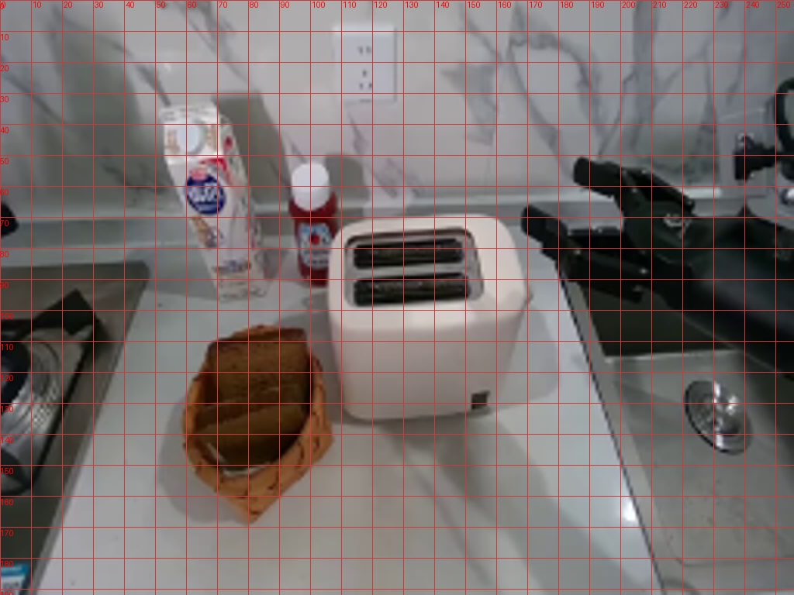
视觉工具实际返回图片 3
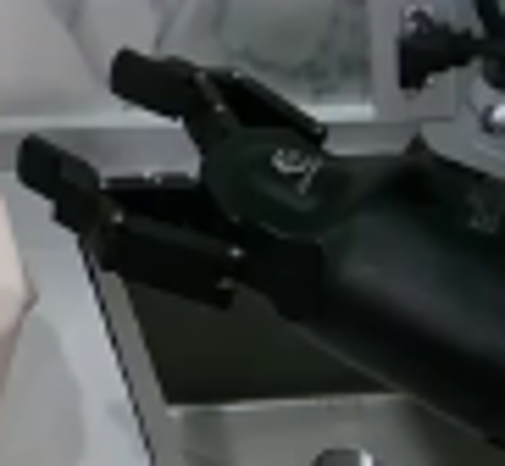
视觉工具实际返回图片 4
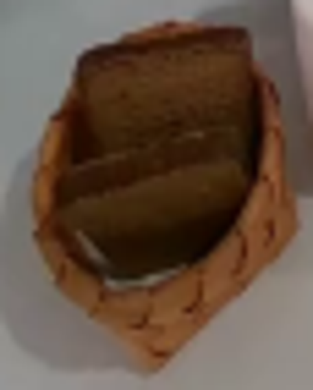
视觉工具实际返回图片 5
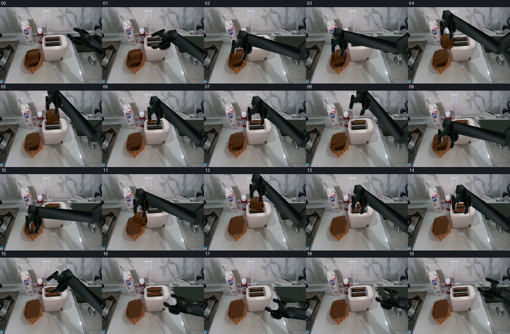
视觉工具实际返回图片 6
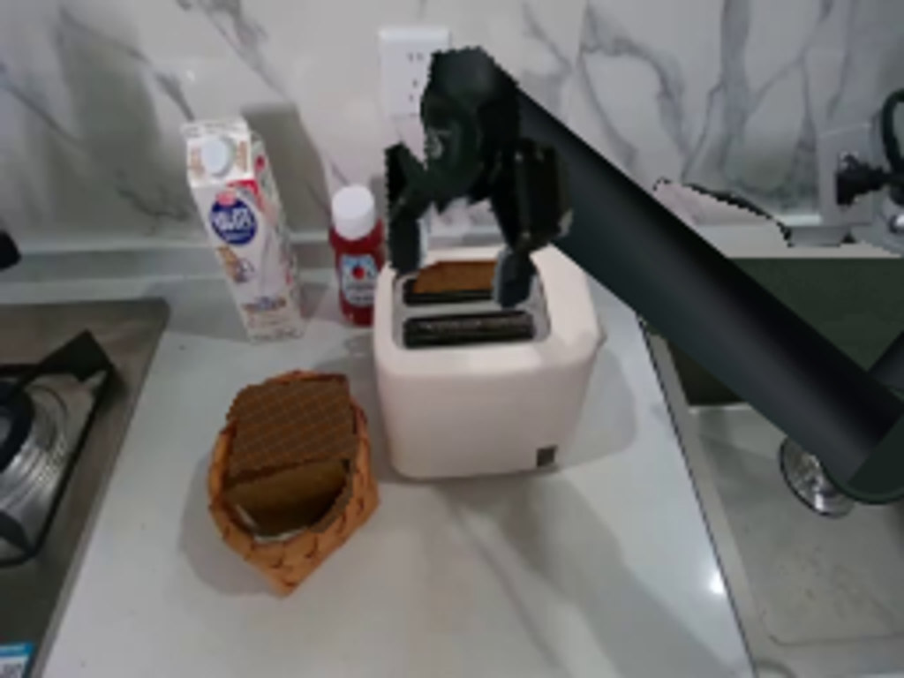
视觉工具实际返回图片 7
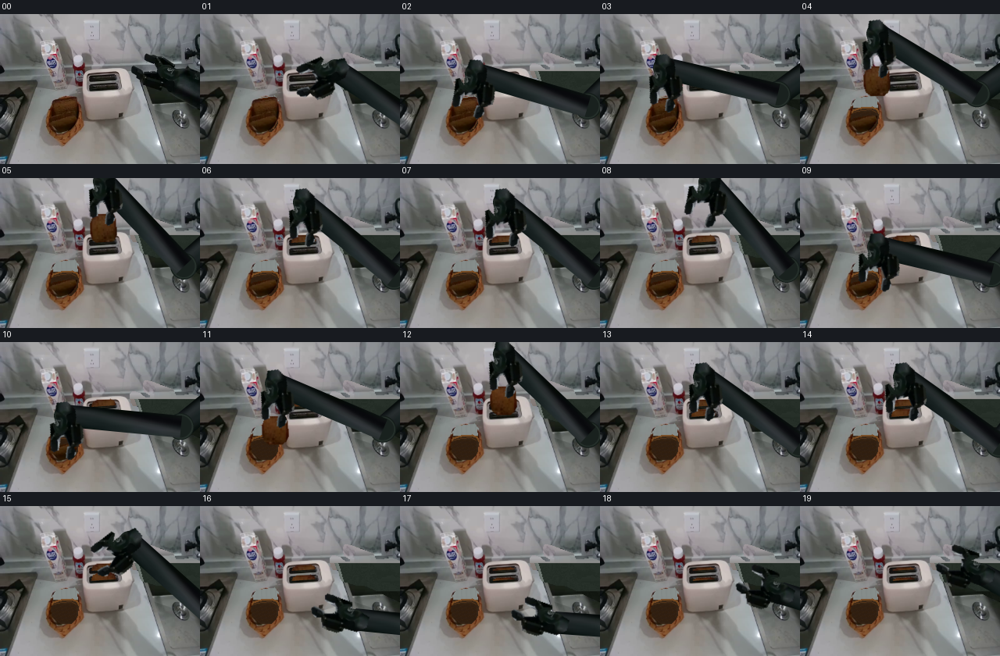
视觉工具实际返回图片 8
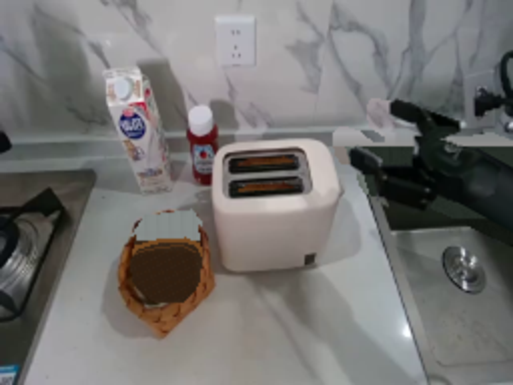
视觉工具实际返回图片 9
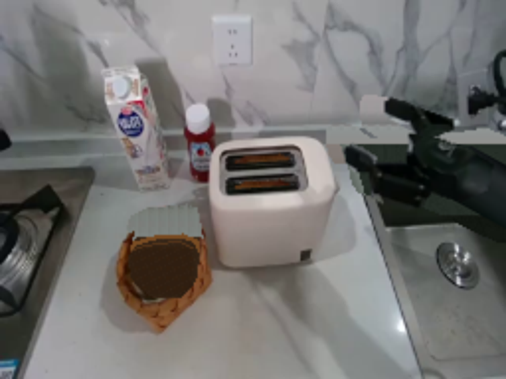
视觉工具实际返回图片 10
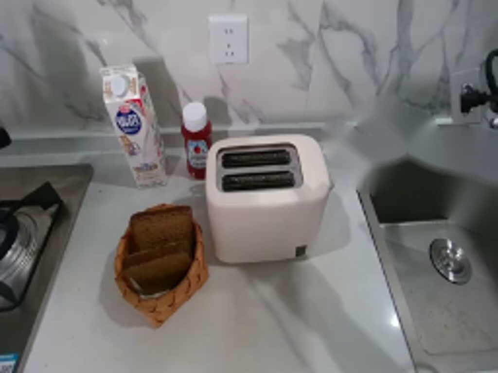
视觉工具实际返回图片 11

保存候选 6 份；完成命令 15 次；可验证图片返回 11 张。原始 API 响应与完整日志保留在本地。